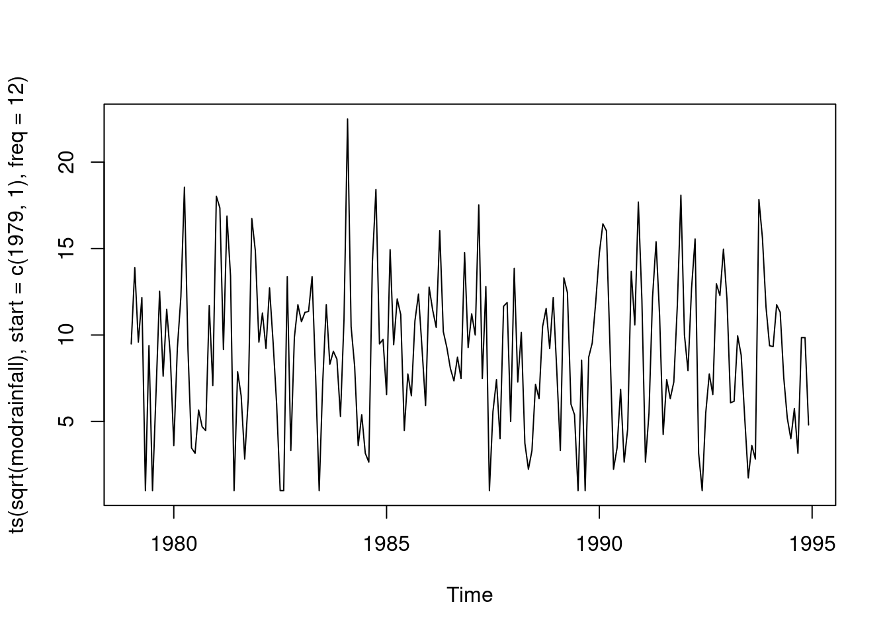

4 spectral density
Spectral density is a function that you can calculative, given the autocorrelations. Spectral Density is the transform of autocorrelation. This tells you that the information content of the autocorrelation and the spectral density are the same. Overall, they give same information about the time series.
Two purposes of spectral density: plot the spectrum before you analyze the time series to see what kind of structure is there.
retail <- read.csv("/cloud/project/data/retail.txt")
attach(retail)
head(retail)## sales time month logsales obs96 c1 s1 c2 s2
## 1 296 1 1 5.690359 0 8.66025e-01 5.00000e-01 0.5 8.66025e-01
## 2 303 2 2 5.713733 0 5.00000e-01 8.66025e-01 -0.5 8.66025e-01
## 3 365 3 3 5.899897 0 6.12000e-17 1.00000e+00 -1.0 1.22000e-16
## 4 363 4 4 5.894403 0 -5.00000e-01 8.66025e-01 -0.5 -8.66030e-01
## 5 417 5 5 6.033086 0 -8.66030e-01 5.00000e-01 0.5 -8.66030e-01
## 6 421 6 6 6.042633 0 -1.00000e+00 1.22000e-16 1.0 -2.40000e-16
## c3 s3 c4 s4 c5 s5 c6 wtgrant
## 1 6.12e-17 1.00e+00 -0.5 8.66025e-01 -8.66030e-01 5.0000e-01 -1 0
## 2 -1.00e+00 1.22e-16 -0.5 -8.66030e-01 5.00000e-01 -8.6603e-01 1 0
## 3 -1.80e-16 -1.00e+00 1.0 -2.40000e-16 3.06000e-16 1.0000e+00 -1 0
## 4 1.00e+00 -2.40e-16 -0.5 8.66025e-01 -5.00000e-01 -8.6603e-01 1 0
## 5 3.06e-16 1.00e+00 -0.5 -8.66030e-01 8.66025e-01 5.0000e-01 -1 0
## 6 -1.00e+00 3.67e-16 1.0 -4.90000e-16 -1.00000e+00 6.1200e-16 1 0sales.ts <- ts(sales, start = c(1967,1), freq = 12)
ts.plot(sales.ts,xlab="time",ylab="sales",main="variety store monthly
sales, in millions") 
fmonth <- as.factor(month)
time<- as.numeric(time)
time2 <-time*time
model<- lm(sales~time+time2+fmonth+wtgrant+wtgrant*time+wtgrant*time2,
data = retail)
summary(model)##
## Call:
## lm(formula = sales ~ time + time2 + fmonth + wtgrant + wtgrant *
## time + wtgrant * time2, data = retail)
##
## Residuals:
## Min 1Q Median 3Q Max
## -104.037 -10.734 0.402 12.583 100.846
##
## Coefficients:
## Estimate Std. Error t value Pr(>|t|)
## (Intercept) 262.527114 10.120004 25.941 < 2e-16 ***
## time 2.056086 0.315487 6.517 1.29e-09 ***
## time2 0.006260 0.002729 2.293 0.0234 *
## fmonth2 13.411342 10.310653 1.301 0.1956
## fmonth3 96.632212 10.312129 9.371 < 2e-16 ***
## fmonth4 113.473174 10.359085 10.954 < 2e-16 ***
## fmonth5 164.995654 10.353761 15.936 < 2e-16 ***
## fmonth6 147.550395 10.351017 14.255 < 2e-16 ***
## fmonth7 125.291246 10.350735 12.105 < 2e-16 ***
## fmonth8 167.448974 10.352909 16.174 < 2e-16 ***
## fmonth9 123.792810 10.357640 11.952 < 2e-16 ***
## fmonth10 154.878407 10.538115 14.697 < 2e-16 ***
## fmonth11 221.696168 10.537139 21.040 < 2e-16 ***
## fmonth12 727.558629 10.537037 69.048 < 2e-16 ***
## wtgrant 969.282000 547.285610 1.771 0.0788 .
## time:wtgrant -15.624940 8.315833 -1.879 0.0624 .
## time2:wtgrant 0.052230 0.031467 1.660 0.0993 .
## ---
## Signif. codes: 0 '***' 0.001 '**' 0.01 '*' 0.05 '.' 0.1 ' ' 1
##
## Residual standard error: 26.29 on 136 degrees of freedom
## Multiple R-squared: 0.984, Adjusted R-squared: 0.9821
## F-statistic: 521.5 on 16 and 136 DF, p-value: < 2.2e-16plot(predict(model),resid(model),xlab="predicted sales",ylab="sales
residual",main="Residual by Predicted Plot")
model2<-lm(logsales~time+time2+fmonth+wtgrant+wtgrant*time+wtgrant*time2)
summary(model2) ##
## Call:
## lm(formula = logsales ~ time + time2 + fmonth + wtgrant + wtgrant *
## time + wtgrant * time2)
##
## Residuals:
## Min 1Q Median 3Q Max
## -0.072088 -0.015601 -0.000901 0.014866 0.076454
##
## Coefficients:
## Estimate Std. Error t value Pr(>|t|)
## (Intercept) 5.705e+00 1.106e-02 515.896 < 2e-16 ***
## time 5.655e-03 3.447e-04 16.404 < 2e-16 ***
## time2 -5.803e-06 2.982e-06 -1.946 0.05372 .
## fmonth2 3.409e-02 1.127e-02 3.026 0.00296 **
## fmonth3 2.083e-01 1.127e-02 18.485 < 2e-16 ***
## fmonth4 2.378e-01 1.132e-02 21.008 < 2e-16 ***
## fmonth5 3.310e-01 1.131e-02 29.257 < 2e-16 ***
## fmonth6 3.025e-01 1.131e-02 26.747 < 2e-16 ***
## fmonth7 2.625e-01 1.131e-02 23.209 < 2e-16 ***
## fmonth8 3.350e-01 1.131e-02 29.617 < 2e-16 ***
## fmonth9 2.602e-01 1.132e-02 22.993 < 2e-16 ***
## fmonth10 3.146e-01 1.151e-02 27.325 < 2e-16 ***
## fmonth11 4.247e-01 1.151e-02 36.888 < 2e-16 ***
## fmonth12 1.003e+00 1.151e-02 87.083 < 2e-16 ***
## wtgrant 1.709e+00 5.980e-01 2.858 0.00493 **
## time:wtgrant -2.860e-02 9.087e-03 -3.148 0.00202 **
## time2:wtgrant 1.045e-04 3.438e-05 3.038 0.00285 **
## ---
## Signif. codes: 0 '***' 0.001 '**' 0.01 '*' 0.05 '.' 0.1 ' ' 1
##
## Residual standard error: 0.02872 on 136 degrees of freedom
## Multiple R-squared: 0.9908, Adjusted R-squared: 0.9898
## F-statistic: 920.3 on 16 and 136 DF, p-value: < 2.2e-16b1<-coef(model2)[1]
b2<-coef(model2)[4:14]+b1
b3<-c(b1,b2)
newintrcpt<-b1-(b3-mean(b3))[1]
newintrcpt ## (Intercept)
## 6.014189wtgrant2<-wtgrant*time;wtgrant3<-wtgrant*time2
xmatrix<-matrix(c(rep(1,length(sales)),time,time2,wtgrant,wtgrant2,wtgrant3),ncol=6)
sub<-c(2,3,15,16,17)
betaest<-c(newintrcpt,coef(model2)[sub])
plot(ts(exp(xmatrix%*%betaest)),xlab="time",ylab="estimated
trend",main="estimated sales trend for model 2") 
seas<-exp(b3-mean(b3))
seas ## (Intercept) fmonth2 fmonth3 fmonth4 fmonth5 fmonth6
## 0.7338478 0.7592983 0.9037831 0.9308487 1.0217711 0.9930875
## fmonth7 fmonth8 fmonth9 fmonth10 fmonth11 fmonth12
## 0.9541214 1.0259164 0.9519653 1.0052024 1.1221733 2.0000783# cosm<-matrix(nrow=length(sales),ncol=6)
# sinm<-matrix(nrow=length(sales),ncol=5)
# for(j in 1:5){
# cosm[,j]<-cos(freq*j*time)
# sinm[,j]<-sin(freq*j*time)
# }
# cosm[,6]<-cos(freq*6*time)
#
# model3<- lm(logsales~time+time2+wtgrant+wtgrant2+wtgrant3+cosm[,1]+sinm[,1]+cosm
# [,2]+sinm[,2]+cosm[,3]+sinm[,3]+cosm[,4]+sinm[,4]+cosm[,5]+sinm[,5]+cos
# m[,6]);summary(model3)
time3<-time*time2;time4<-time*time3;time5<-time*time4
model4<-lm(logsales~time+time2+time3+time4+time5+wtgrant+wtgrant2+wtgrant3+obs96+fmonth)
summary(model4) ##
## Call:
## lm(formula = logsales ~ time + time2 + time3 + time4 + time5 +
## wtgrant + wtgrant2 + wtgrant3 + obs96 + fmonth)
##
## Residuals:
## Min 1Q Median 3Q Max
## -0.05523 -0.01590 -0.00218 0.01162 0.09083
##
## Coefficients:
## Estimate Std. Error t value Pr(>|t|)
## (Intercept) 5.647e+00 1.491e-02 378.866 < 2e-16 ***
## time 1.663e-02 2.020e-03 8.233 1.55e-13 ***
## time2 -4.943e-04 9.168e-05 -5.391 3.13e-07 ***
## time3 8.306e-06 1.753e-06 4.739 5.49e-06 ***
## time4 -5.822e-08 1.511e-08 -3.853 0.000181 ***
## time5 1.372e-10 4.907e-11 2.797 0.005935 **
## wtgrant 2.555e+00 2.530e+00 1.010 0.314420
## wtgrant2 -4.913e-02 4.362e-02 -1.126 0.262035
## wtgrant3 2.225e-04 1.892e-04 1.176 0.241648
## obs96 -9.089e-02 2.673e-02 -3.400 0.000892 ***
## fmonth2 3.366e-02 9.869e-03 3.411 0.000860 ***
## fmonth3 2.076e-01 9.875e-03 21.018 < 2e-16 ***
## fmonth4 2.348e-01 9.949e-03 23.597 < 2e-16 ***
## fmonth5 3.274e-01 9.936e-03 32.952 < 2e-16 ***
## fmonth6 2.985e-01 9.932e-03 30.055 < 2e-16 ***
## fmonth7 2.581e-01 9.935e-03 25.979 < 2e-16 ***
## fmonth8 3.303e-01 9.946e-03 33.214 < 2e-16 ***
## fmonth9 2.553e-01 9.966e-03 25.615 < 2e-16 ***
## fmonth10 3.102e-01 1.012e-02 30.662 < 2e-16 ***
## fmonth11 4.203e-01 1.011e-02 41.557 < 2e-16 ***
## fmonth12 1.006e+00 1.035e-02 97.194 < 2e-16 ***
## ---
## Signif. codes: 0 '***' 0.001 '**' 0.01 '*' 0.05 '.' 0.1 ' ' 1
##
## Residual standard error: 0.02516 on 132 degrees of freedom
## Multiple R-squared: 0.9932, Adjusted R-squared: 0.9922
## F-statistic: 962 on 20 and 132 DF, p-value: < 2.2e-16model5<-lm(logsales~time+time2+time3+time4+time5+wtgrant+obs96+fmonth)
anova(model5,model4) ## Analysis of Variance Table
##
## Model 1: logsales ~ time + time2 + time3 + time4 + time5 + wtgrant + obs96 +
## fmonth
## Model 2: logsales ~ time + time2 + time3 + time4 + time5 + wtgrant + wtgrant2 +
## wtgrant3 + obs96 + fmonth
## Res.Df RSS Df Sum of Sq F Pr(>F)
## 1 134 0.085307
## 2 132 0.083540 2 0.001767 1.396 0.2512White noise light contains all the colors of the visual spectrum. A times seris that consist of uncorrelated points, results in a flat spectrum. When you calculate a spectram estimate in R, specify a bandwidth for the estimate: the periodogram. Number of raw estatimes are averaged across the frequency. Common to choose the span to be a fraction of the sqrt(length of time series). So if length of TS is 360, sqrt = 19, half of that is 9, so span ~ 9.
Here, don’t see a flat spectral density. Peak at the low frequencies (left end), meaning that there is remaining trend structure that the model does not capture. Also some spectral activity around frequencies around 432. Peaks are important, not the valleys. Peaks measure spectral power and the contribution to the variance. Half of the variance is equal to the area under the spectral curve. Still some variance attributable to trend because of peak at the low end.
Is there any seasonal structure? at 1/12? Not a peak but some height. Take the length of the blue line segment, above the knot, and find if the length of that line segment is greater than the distance from the highest to lowest point. Looks like no, in this case, highest to lowest point exceeds twice that line segment length, so this does not invole reduction to white noise. Fluctuations like this show us that we haven’t reduced to white noise. The distances are small enough.
spectrum(resid(model5), span = 8)
Same time series, without the use of a span. This is too variable. The span averages the vertical heights over a certain horizontal width.
If you add lag 1,2,3 residuals to model 5, this improves the fit.
spectrum(resid(model5))
In Beer example, trend estimation is strong. Possible outlier in 1973. Estimated autocorrelations of the residuals. Clear remaining seasonal structure. Is there remaining trend? Possibly indicated. Strong action around lag 12 and lag 24 and also lag 6 and 18. The seasonal structure is very strong.. but the calendar structure, not sure.
Length of the time series is 476. Sqrt(476) = 22… Half of that is 11. Go to a span of 8…
Calendar frequencies in blue, and seasonal frequencies in red. At the left end, little remaining trend. Pearks for the red lines are for seasonal structure that is not built into the model. Peaks at 1,2,3 and 5/12. No peak at 4/12, and no peak at 6/12.
The blue lines -> don’t consider frequency 220 to be important, because no peak. But 348 is prominent. Takeaway: we need to add seasonal structure, and the calendar pair with 438. Proability also the calendar pair with frequencye 432.
The residual spectrum pinpoints what additional structure we should put in the model.
The square root of the length of the time series is 22, half of that is 11. Why use a lower value for the span (8 instead of 11)? Because he is concerned about the closeness of two frequencies that may play a role. Frequencies 4/12… 333 and 348, they are close to eachother. If you choose too large of a span, then it will look wider. It will not seperate or resolve these two different components which are close in frequency. Similar to “resolution”. Goal here is to see fine structure
Add calendar structure certainly with 348 and maybe with 342
ausbeer <- read.csv("/cloud/project/data/beeraustralia.txt")
attach(ausbeer)## The following object is masked from retail:
##
## monthfmonth <- factor(month)
head(ausbeer)## year month beer dlogbeer obs317 obs318
## 1 1956 1 93.2 NA 0 0
## 2 1956 2 96.0 0.02960047 0 0
## 3 1956 3 95.2 -0.00836825 0 0
## 4 1956 4 77.1 -0.21087666 0 0
## 5 1956 5 70.9 -0.08383285 0 0
## 6 1956 6 64.8 -0.08996483 0 0time<- as.numeric(1:length(beer))
time <- as.numeric(1:length(beer))
model1<- lm(log(beer) ~ time +I(time^2) + I(time^3) +
I(time^4) + I(time^5) + I(time^6) +
obs317);summary(model1)##
## Call:
## lm(formula = log(beer) ~ time + I(time^2) + I(time^3) + I(time^4) +
## I(time^5) + I(time^6) + obs317)
##
## Residuals:
## Min 1Q Median 3Q Max
## -0.41511 -0.09595 -0.01442 0.08669 0.32406
##
## Coefficients:
## Estimate Std. Error t value Pr(>|t|)
## (Intercept) 4.410e+00 4.414e-02 99.908 < 2e-16 ***
## time 2.798e-03 2.551e-03 1.097 0.27332
## I(time^2) -4.905e-05 4.642e-05 -1.057 0.29119
## I(time^3) 6.837e-07 3.648e-07 1.874 0.06156 .
## I(time^4) -3.352e-09 1.390e-09 -2.411 0.01628 *
## I(time^5) 6.831e-12 2.530e-12 2.700 0.00718 **
## I(time^6) -5.012e-15 1.762e-15 -2.844 0.00465 **
## obs317 -3.381e-01 1.348e-01 -2.508 0.01248 *
## ---
## Signif. codes: 0 '***' 0.001 '**' 0.01 '*' 0.05 '.' 0.1 ' ' 1
##
## Residual standard error: 0.1341 on 468 degrees of freedom
## Multiple R-squared: 0.747, Adjusted R-squared: 0.7432
## F-statistic: 197.4 on 7 and 468 DF, p-value: < 2.2e-16resids1.ts<-ts(resid(model1),start=c(1956,1),freq=12)
plot(resids1.ts,xlab="time",ylab="residual",main="Model 1 residuals")
resids1<-resid(model1)
class(resids1) ## [1] "numeric"spectrum(resids1,span=8)
resids1<-resid(model1)
class(resids1) ## [1] "numeric"spectrum(resids1,span=8)
abline(v=c(1/12,2/12,3/12,4/12,5/12,6/12),col="red",lty=2)
abline(v=c(0.220,0.348,0.432),col="blue",lty=2) 
Refined model (with seasonal structure added, AND calendar trigonometric pairs)
Fundamental pair is sig. 220 pair is not sig. 432 pair is sig. You can do a partial F for the 432 pair if you want to be sure.
Plot: instead of going up to .1, we go up only to .010, so everything has come down substantially. The peak at the low end -> there is remaining seasonal trend. Is there remaining seasonal structure? Yes, at 1/12 and 1/12. The model did not pick up dynamic structure. What about the calendar frequencies? See at 348, the large peak. At 432, there is no peak, and argue with 220, a tiny peak, but not large enough to matter.
Is there reduction to white noise? No. If you double the length of this segment, it does not exceed the distance from the top to the bottom. Maybe, take the distance from the top to something a bit more down. This would also not reduce to white noise.
Conclude from this that there is more trend not yet captured, and that there is dynamic seasonal structure. There is one peak, and that looks like it is above .38
cosm<-matrix(nrow=length(time),ncol=6)
sinm<-matrix(nrow=length(time),ncol=5)
for(i in 1:5){
cosm[,i]<-cos(2*pi*i*time/12)
sinm[,i]<-sin(2*pi*i*time/12)
}
cosm[,6]<-cos(pi*time)
c1<-cosm[,1];c2<-cosm[,2];c3<-cosm[,3];c4<-cosm[,4];c5<-cosm[,5];c6<-
cosm[,6]
s1<-sinm[,1];s2<-sinm[,2];s3<-sinm[,3];s4<-sinm[,4];s5<-sinm[,5]
c220<-cos(0.440*pi*time);s220<-sin(0.440*pi*time);c348<-
cos(0.696*pi*time);s348<-sin(0.696*pi*time);c432<-
cos(0.864*pi*time);s432<-sin(0.864*pi*time)
model2<-lm(log(beer)~time+I(time^2)+I(time^3)+I(time^4)+I(time^5)+I(time^6)+obs317+c1+s1+c2+s2+c3+s3+c4+s4+c5+s5+c6+c220+s220+c348+s348+c432+s432);summary(model2) ##
## Call:
## lm(formula = log(beer) ~ time + I(time^2) + I(time^3) + I(time^4) +
## I(time^5) + I(time^6) + obs317 + c1 + s1 + c2 + s2 + c3 +
## s3 + c4 + s4 + c5 + s5 + c6 + c220 + s220 + c348 + s348 +
## c432 + s432)
##
## Residuals:
## Min 1Q Median 3Q Max
## -0.185913 -0.036013 -0.000215 0.037196 0.168246
##
## Coefficients:
## Estimate Std. Error t value Pr(>|t|)
## (Intercept) 4.430e+00 1.959e-02 226.107 < 2e-16 ***
## time 1.680e-03 1.132e-03 1.485 0.138326
## I(time^2) -2.909e-05 2.059e-05 -1.413 0.158380
## I(time^3) 5.270e-07 1.618e-07 3.257 0.001213 **
## I(time^4) -2.750e-09 6.165e-10 -4.460 1.04e-05 ***
## I(time^5) 5.718e-12 1.122e-12 5.096 5.11e-07 ***
## I(time^6) -4.221e-15 7.815e-16 -5.402 1.07e-07 ***
## obs317 -2.244e-01 6.083e-02 -3.688 0.000254 ***
## c1 1.447e-01 3.862e-03 37.465 < 2e-16 ***
## s1 -9.851e-03 3.858e-03 -2.554 0.010987 *
## c2 5.935e-03 3.859e-03 1.538 0.124803
## s2 -4.430e-02 3.856e-03 -11.488 < 2e-16 ***
## c3 3.989e-02 3.854e-03 10.352 < 2e-16 ***
## s3 -2.805e-02 3.862e-03 -7.263 1.67e-12 ***
## c4 1.210e-02 3.859e-03 3.135 0.001828 **
## s4 -2.992e-03 3.855e-03 -0.776 0.438038
## c5 3.046e-02 3.861e-03 7.887 2.35e-14 ***
## s5 2.450e-02 3.858e-03 6.350 5.25e-10 ***
## c6 -2.209e-03 2.728e-03 -0.810 0.418400
## c220 -3.353e-03 3.857e-03 -0.869 0.385145
## s220 3.743e-04 3.858e-03 0.097 0.922772
## c348 -2.239e-02 3.858e-03 -5.803 1.23e-08 ***
## s348 -3.342e-02 3.856e-03 -8.667 < 2e-16 ***
## c432 -1.228e-02 3.869e-03 -3.174 0.001608 **
## s432 5.222e-03 3.850e-03 1.357 0.175603
## ---
## Signif. codes: 0 '***' 0.001 '**' 0.01 '*' 0.05 '.' 0.1 ' ' 1
##
## Residual standard error: 0.05943 on 451 degrees of freedom
## Multiple R-squared: 0.9521, Adjusted R-squared: 0.9496
## F-statistic: 373.8 on 24 and 451 DF, p-value: < 2.2e-16spectrum(resid(model2),span=8)
abline(v=c(1/12,2/12,3/12,4/12,5/12,6/12),col="red",lty=2)
abline(v=c(0.220,0.348,0.432),col="blue",lty=2)
ampltd<-c(rep(0,times=6))
b2<-coef(model2)[9:19]
for(i in 1:5){
i1<-2*i-1
i2<-i1+1
ampltd[i]<-sqrt(b2[i1]^2+b2[i2]^2)
}
ampltd[6]<-abs(b2[11])
ampltd ## [1] 0.145011537 0.044699068 0.048768508 0.012464686 0.039084803 0.002209124